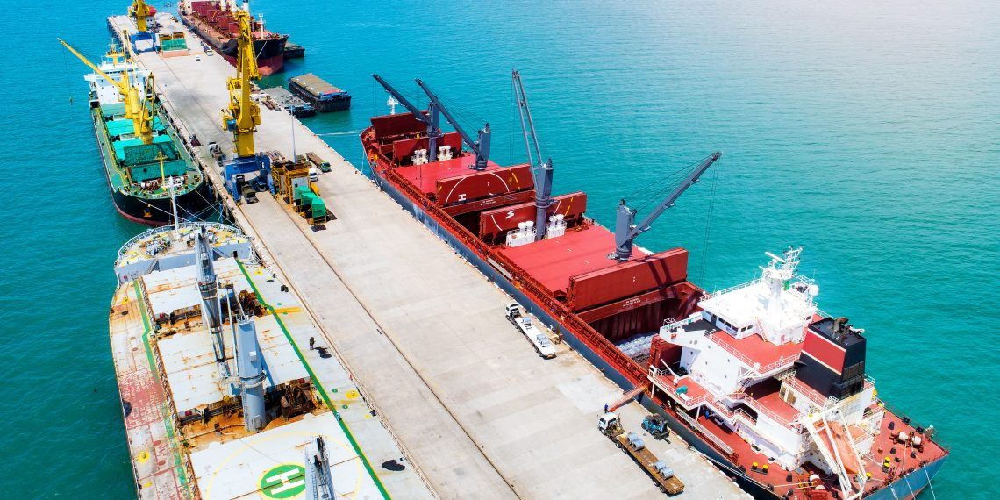

Independent inspection, from terminal to certificate
Kephren's service lines cover the full chain of custody for a cargo — from pre-shipment verification at the loading terminal, through laboratory analysis, to the government-facing supervision that protects national export revenue.
Pre-Shipment Inspection
Kephren assists government agencies and private clients ahead of export and import, ensuring the correct methodology in assessing both quantity and quality is adopted and reported — work that boosts government revenue through careful classification, valuation and risk management.
Inspections are bespoke, tailored precisely to the client and the cargo, spanning quality inspection of dry and wet cargoes, gas, crude oil and refined products, with independent physical surveys and sampling carried out at load port.
- Crude oil, petroleum products & liquefied gases
- Chemicals, solid minerals & agricultural products
- Terminal audits & tank calibration
- Loss control investigations
- Pre-shipment & destination inspection for export and import cargoes
Laboratory & Crude Oil Testing
Qualitative and quantitative analysis performed against internationally recognised standards, supporting both commercial trading and regulatory certification requirements.
- Crude oil assay & physical property analysis
- Sample retention & chain-of-custody control
- Refined product & gas quality testing
- Fiscal auditing support for metering disputes
Government Export Supervision & Loss Control
Working directly with government agencies to safeguard national revenue — verifying that every Bill of Lading reflects the true quantity shipped and that quality is correctly reflected in pricing.
- Fiscal auditing by qualified chartered accountants
- Point-of-export monitoring & pipeline monitoring
- Custodial document generation & transfer auditing
- Pilotage registration of offshore operators & tankers

Laboratory Analysis
Precision testing against international standards

Terminal Operations
Real-time cargo monitoring and verification